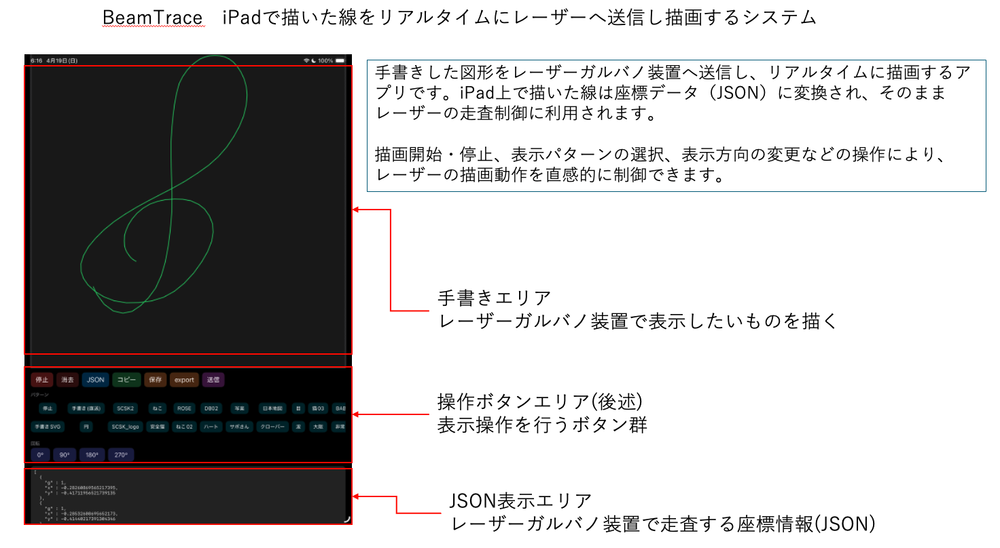
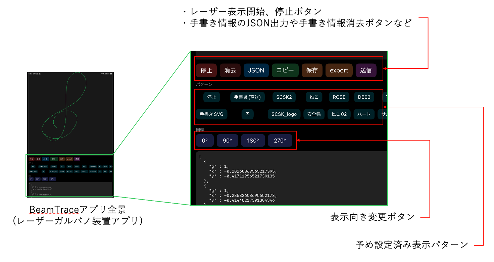

レーザーガルバノ描画装置 — iinuma


ESP32で2つのガルバノミラーを高速制御し、グリーンレーザーで空間に線画を描く装置です。
スマホアプリで描いたイラストをリアルタイムで投影でき、広告・文字・図形などをインパクトのある形で表示できます。設置型の新しい広告媒体・アート表現としての活用も提案します。
特許申請中
| 制御マイコン | ESP32 |
|---|---|
| レーザー | グリーンレーザー（5mW以下） |
| 走査方式 | 2軸ガルバノミラー制御 |
| 描画内容 | 線画（ベクター形式） |
| 操作方法 | スマホアプリ（iOS）によるリアルタイム制御 |
| 本体サイズ | 300mm × 100mm × 100mm |
第1希望：エレクトロニクス（電子工作）
第2希望：デザイン／アート／ファッション